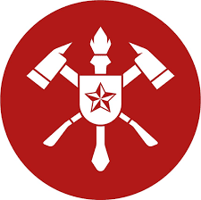

.jpg)
Sobre o CSALT
A capacitação em salvamento em altura foi iniciada no CBMERJ há 35 anos. Hoje, é reconhecida como uma das melhores do país, treinando não só militares da corporação fluminense, mas também bombeiros militares de todo o Brasil, que terminam o programa como especialistas de alto nível em salvamento em altura. Eles estão preparados para enfrentar diferentes situações, pois as técnicas ensinadas podem ser aplicadas em muitos outros tipos de salvamentos.
O objetivo do curso é qualificar bombeiros militares para atuarem de maneira proficiente, capacitando-os para agirem em locais de difícil acesso, utilizando estratégias muitas vezes complexas e que exigem excelentes preparo físico, psicológico e técnico. A grade tem quatro meses de duração e possui três módulos, que incluem adaptação gradual à altura, normas e especificações de materiais, inspeção de equipamentos, checagem de descida por corda, testes de equipamentos, pesquisa, desenvolvimento e experiência de novas técnicas, operação com viaturas utilizadas nos salvamentos aéreos, escalada em estruturas (torres, gruas e andaimes); resgates de suicida; salvamentos com transposição horizontal, utilizando pêndulo em teleférico e torre de eletricidade, além de outras situações adversas relacionadas a resgates em alturas.
- 